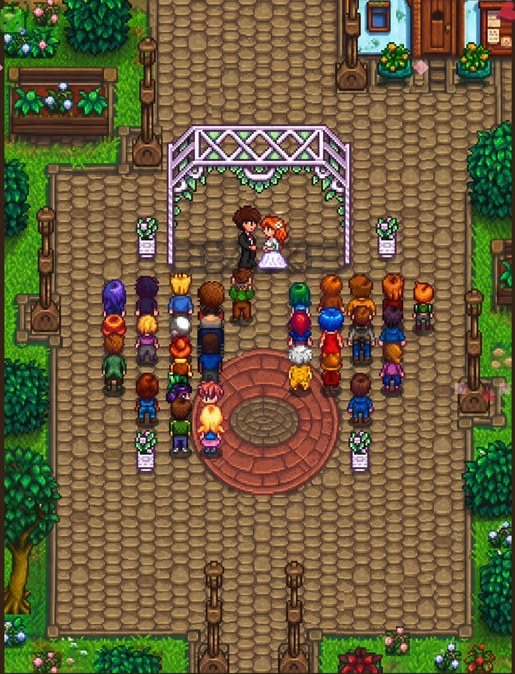
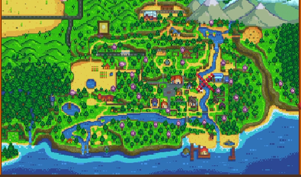
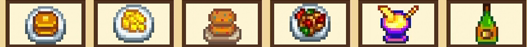
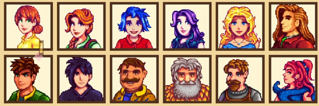
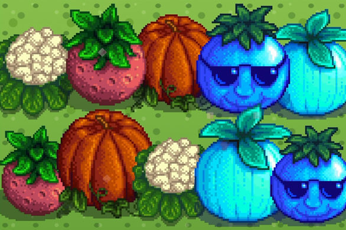

♡ 婚礼邀请函 ♡
文尚 & 邓旖
诚邀您见证我们的幸福时刻
- 日期
- 2026年11月15日 · 星期日
- 时间
- 12:00 宴席
- 地点
- 宁乡市江天·呈宫殿（翡翠湖国际广场店）
- 主角
- 文尚 & 邓旖
【给宾客的话待补充】这一次，我们想邀请你见证属于我们的双人新生活。
STARDEW WEDDING
文尚 ♥ 邓旖
2026 · 11 · 15

诚邀您见证我们的幸福时刻
【给宾客的话待补充】这一次，我们想邀请你见证属于我们的双人新生活。
秋之第十五日 · 盼一个好天气
宁乡市江天·呈宫殿（翡翠湖国际广场店）
今日宜：相聚、拥抱、拍照和分享喜悦。
背包提示：带上笑容，空出一点心动的位置。
交通、停车与接送说明待补充。
2026年11月15日，我们的双人新生活即将开启。沿着小路，收集藏在页面里的 6 份祝福，一起来赴约吧。
奖励：友谊与幸福值 +1000
游戏里的浪漫，属于我们的约定。
游戏场景示意 · 实际宴席地点见下方导航
灌木丛似乎动了一下…

这是游戏地图，婚礼实际路线请点击下方导航。
我们的现实坐标
具体安排待补充
停车说明待补充
可先查看地图路线
秋风轻轻，爱意满满。
我们想在这一天，
把最好的故事念给你听。
找到网页里的 6 个祝尼魔
一起打开这份甜蜜回忆。
新人照片待补充
你已成功解锁，等我们把幸福照片放进来。



把祝福写进这台设备的小小存档。
温馨提示待补充